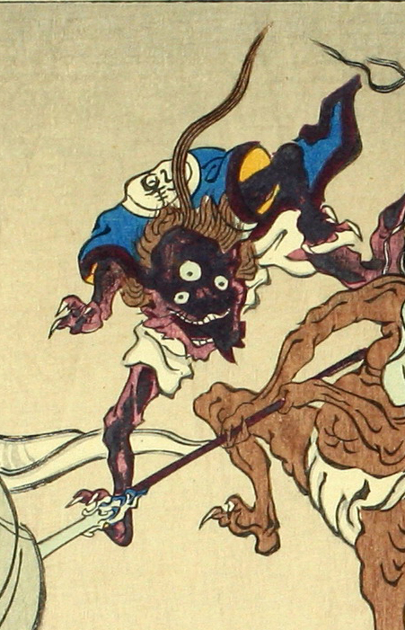

赤黒い肌をした三つ目の化物。大きく口をあけ、舌を出している。後頭部から一房長い髪をたらしている。手足の爪が長く、左足を高くあげている。背中に「清」と書かれた青い上着と、白い股引のようなものを身につけている。
著作者：洒落斎芳幾（歌川芳幾）／出典：親書誌：U426_nichibunken_0075：滑稽倭日史記；コッケイヤマトシキ／日付：2007／資源識別子：U426_nichibunken_0075_0001_0007
Copyright (c)2010- International Research Center for Japanese Studies, Kyoto, Japan. All rights reserved.